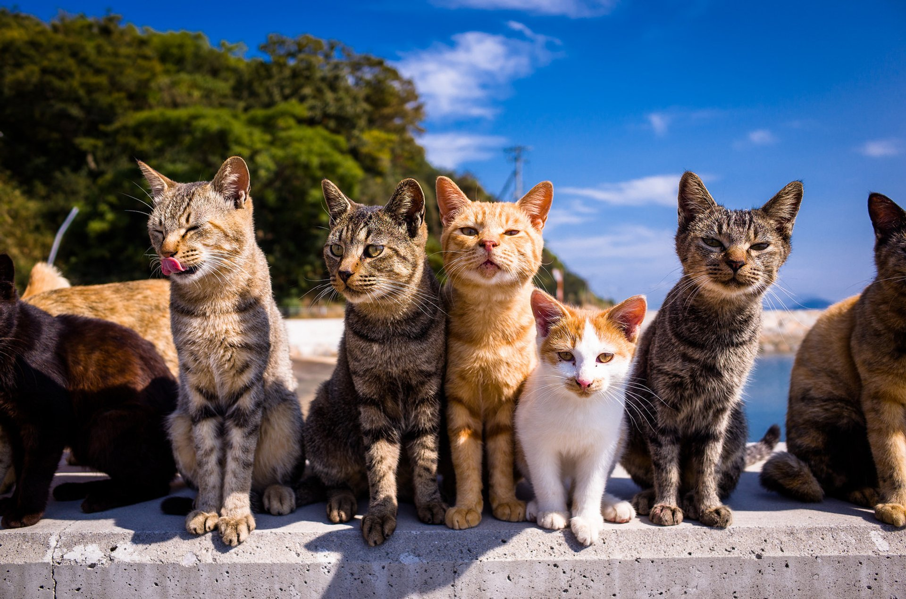

Aoshima (青島) or known as Cat Island (猫の島) is an island known for it's large population of cats. The island is roughly 1 mile (1.6 km) long.[citation needed] It was formerly part of Nagahama in Kita District, but as of 2005, is part of Ōzu. The ratio between cats and humans on that island is 10:1, and there are only about 50 human residents (aged 75 and older).
In February 2018, it was reported by Ehime Shimbun that all cats on the island would be spayed or neutered in order to lower the feline population as a response to the declining human population.[3] By October, 210 cats had been spayed and neutered, with another estimated 10 cats uncaptured that had been hidden by a resident who opposed the program
